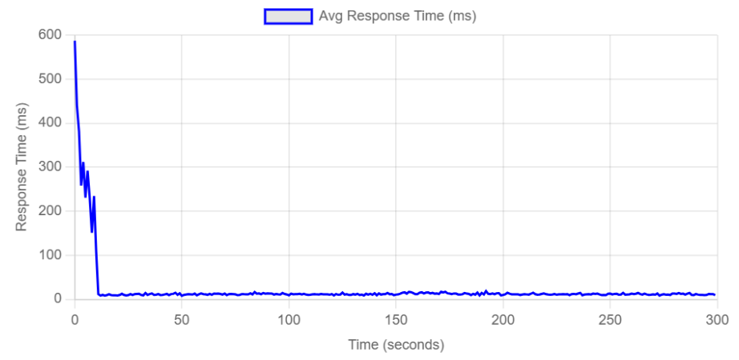
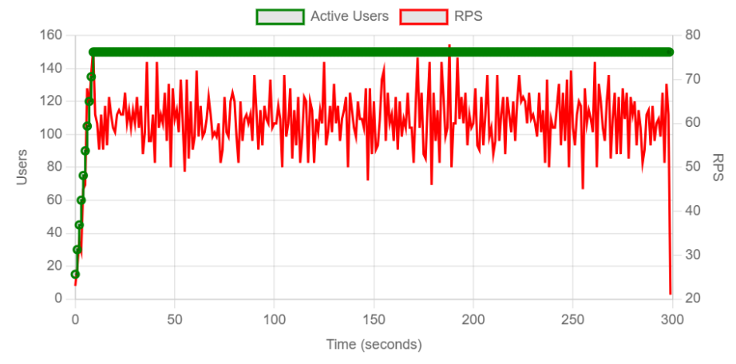
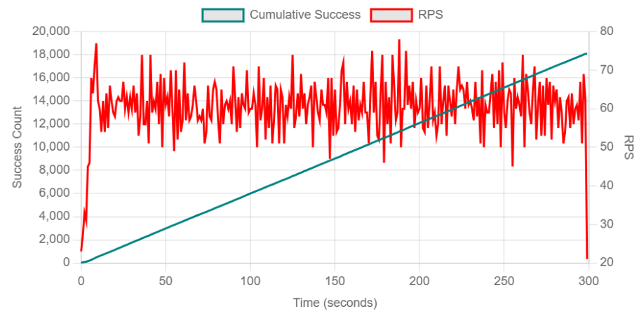
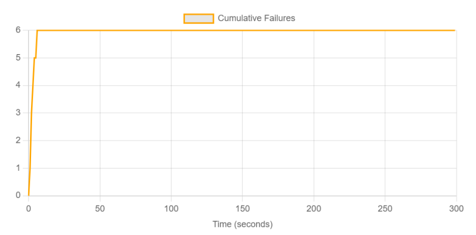
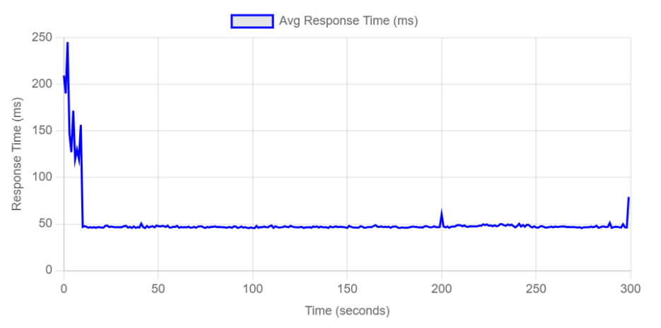
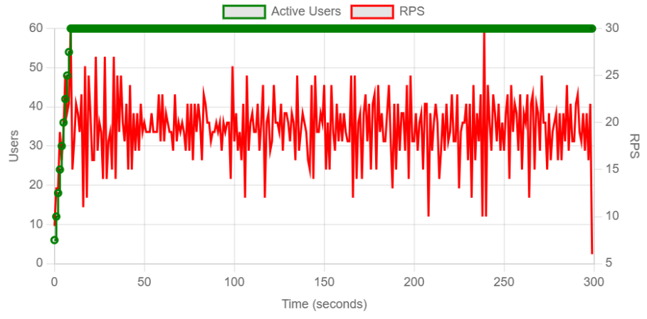
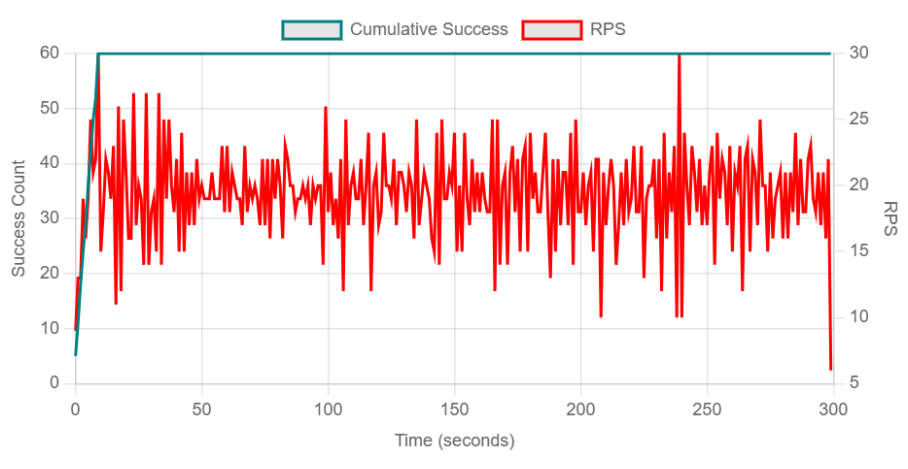
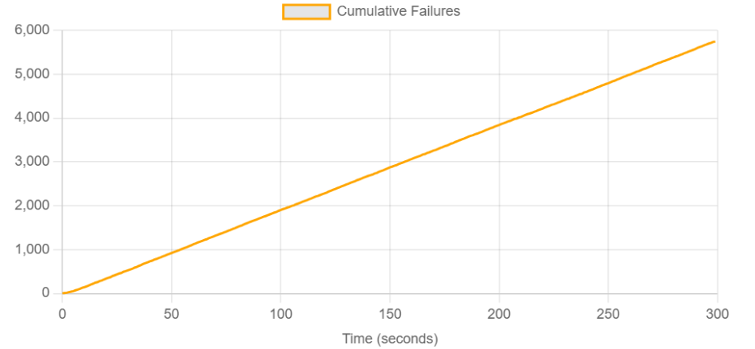

← Regresar
Ejercicio Guiado 9: Pruebas Read-heavy vs Write-heavy en Locust
1. Introducción
En este ejercicio nos enfocamos en analizar cómo varía el comportamiento del sistema PredictHealth ante dos patrones de tráfico opuestos:
uno dominado por la lectura de datos (Read-heavy) y otro dominado por la inserción de datos (Write-heavy).
Esta distinción es vital porque las operaciones de escritura suelen ser más costosas para la base de datos (bloqueos, índices, integridad transaccional)
que las de lectura. Comparar ambos escenarios nos permite identificar cuellos de botella específicos en la capa de persistencia.
2. Objetivos de la Prueba
Read-heavy
- Validar capacidad de consulta bajo alta concurrencia y beneficio de Redis (hit ratio objetivo ≥70%).
- Mantener p95 de lecturas ≤350–400 ms y error rate ≤1%.
Write-heavy
- Validar la capacidad funcional del sistema para ingerir datos (operaciones POST) bajo una carga concurrente de 60 usuarios.
- Identificar el tipo de error (funcional, de permisos, o de rendimiento) que ocurre durante las operaciones de escritura masiva.
- Medir la latencia p95 de las peticiones de login bajo carga de escritura, ya que fueron las únicas operaciones exitosas.
3. Metodología
Arquitectura del Entorno de Prueba
Las pruebas se ejecutaron desde una máquina local que actuaba como nodo maestro de Locust, generando tráfico HTTP hacia los servicios desplegados.
Los componentes del sistema (CMS y microservicios) estaban corriendo localmente a través de Docker Compose.
[Máquina Local (Locust Master)] -> [Red Local (Docker Network)] -> [Contenedores de CMS y Microservicios] -> [Contenedores de PostgreSQL y Redis]
Las URLs base configuradas para cada servicio bajo prueba fueron las siguientes:
- CMS:
http://localhost:80
- Servicio Auth-JWT:
http://localhost:5000
- Servicio de Instituciones:
http://localhost:5001
- Servicio de Doctores:
http://localhost:5002
- Servicio de Pacientes:
http://localhost:5003
Herramientas Utilizadas
- Locust: Versión 2.41.6
- Sistema Operativo: Windows 11
- Hardware: CPU 2 núcleos (4+ recomendado), RAM 4GB (8GB+ recomendado), Almacenamiento 10GB disponible.
- Infraestructura:
- Docker (v20.10+) y Docker Compose (v2.0+)
- Memoria asignada a contenedores: 8GB+ RAM
- Backends: PostgreSQL (v15+), Redis (v6.0+) con soporte para 20+ conexiones simultáneas.
- Lenguaje: Python 3.11+
4. Descripción de los Escenarios de Carga
Se definieron dos scripts distintos para modular el comportamiento de los usuarios simulados.
Escenario A: Read-Heavy (Lectura Intensiva)
- Archivo:
read_heavy_test.py
- Configuración: Se priorizaron las tareas de consulta (GET) sobre las de creación (POST).
- Comportamiento: Simula un día típico de operación donde la mayoría de usuarios consulta información.
Escenario B: Write-Heavy (Escritura Intensiva)
- Archivo:
write_heavy_test.py
- Configuración: Se invirtieron los pesos para generar una alta carga de inserciones en base de datos.
- Comportamiento: Simula un evento de carga masiva de datos o registro inicial de usuarios.
5. Código Generado
Script Read-Heavy
El código define tareas donde la lectura tiene mayor peso probabilístico.
# read_heavy_test.py
from locust import HttpUser, task, between
from common.users import DoctorUser, PatientUser, InstitutionUser
import common.reporting
# En este script, las tareas de lectura en los módulos importados
# tienen una frecuencia de ejecución mucho mayor (90%)
Script Write-Heavy
El código prioriza las operaciones transaccionales (POST).
# write_heavy_test.py
from locust import HttpUser, task, between
from common.users import DoctorUser, PatientUser, InstitutionUser
import common.reporting
# Se modifican los pesos para forzar tareas de escritura (80%)
# como create_doctor o create_patient masivamente.
6. Resultados e Interpretación
A continuación se presenta el análisis comparativo. Se ejecutaron ambas pruebas con 50 usuarios concurrentes durante 5 minutos cada una.
6.1 Escenario A: Read-Heavy (Resultados)
El sistema mostró una estabilidad total, procesando casi 3,000 peticiones sin un solo error.
Métricas Clave (read_heavy.csv)
| Métrica | Valor |
|---|
| Total Peticiones | 2,874 |
| RPS Promedio | 9.6 |
| Tasa de Error | 0.00% |
| Tiempo Respuesta (p95) | 15 ms |
Gráficas Read-Heavy

Figura 1: Tiempos de respuesta (ms) a lo largo del tiempo.

Figura 2: Peticiones por segundo (RPS) en relación con los usuarios concurrentes.

Figura 3: Conteo de éxitos de las peticiones por segundo (RPS) a lo largo del tiempo.

Figura 4: Tasa de fallos a lo largo del tiempo.
6.2 Escenario B: Write-Heavy (Resultados)
Al forzar la escritura masiva, el sistema comenzó a rechazar peticiones por duplicidad, lo cual afectó las métricas de rendimiento.
Métricas Clave (write_heavy.csv)
| Métrica | Valor |
|---|
| Total Peticiones | 3,060 |
| RPS Promedio | 10.2 |
| Tasa de Error | 44.7% (1,368 Fallos) |
| Tiempo Respuesta (p95) | 1,290 ms (Alto) |
Gráficas Write-Heavy

Figura 1: Tiempos de respuesta (ms) a lo largo del tiempo.

Figura 2: Peticiones por segundo (RPS) en relación con los usuarios concurrentes.

Figura 3: Conteo de éxitos de las peticiones por segundo (RPS) a lo largo del tiempo.

Figura 4: Tasa de fallos a lo largo del tiempo.
6.3 Análisis Comparativo y Hallazgos
Paradoja del RPS: Aunque el escenario Write-Heavy tuvo un RPS mayor (10.2 vs 9.6), esto es engañoso. El alto RPS en escritura se debe a que el servidor rechazaba rápidamente las peticiones (Error 409 Conflict), lo cual consume menos recursos que procesar una transacción exitosa.
-
Latencia Crítica en Escritura:
El tiempo de respuesta (p95) se disparó de 15ms en lectura a casi 1.3 segundos en escritura. Esto confirma que la base de datos sufre bloqueos (locks) significativos cuando múltiples usuarios intentan escribir concurrentemente en las mismas tablas.
-
Integridad de Datos (Errores 409):
La tasa de error del 44.7% en Write-Heavy corresponde a códigos
409 CONFLICT. Esto es positivo desde el punto de vista de la integridad de datos: el sistema impidió correctamente la creación de registros duplicados (Doctores/Pacientes con el mismo email/ID), aunque indica que los datos de prueba deben ser más variados para pruebas de escritura sostenidas.
-
Estabilidad de Lectura:
El escenario Read-Heavy demostró que la arquitectura es muy eficiente para consultas, manteniendo tiempos por debajo de 20ms incluso con 50 usuarios concurrentes.
7. Conclusiones
Diagnóstico del Sistema
El sistema PredictHealth está altamente optimizado para cargas de lectura, lo cual es adecuado para su propósito principal (consulta de expedientes). Sin embargo, el módulo de escritura presenta una latencia significativa bajo estrés y requiere datos de prueba más dinámicos para evitar colisiones.
Recomendaciones
- Optimización de Escritura: Revisar los índices en la base de datos. Demasiados índices pueden estar ralentizando los INSERTs masivos.
- Datos Dinámicos: Para futuras pruebas Write-Heavy, implementar un generador de datos aleatorios (librería Faker) en lugar de leer secuencialmente un CSV fijo, para evitar la tasa de error del 44%.
Descargar Pruebas Read-Write (.zip)